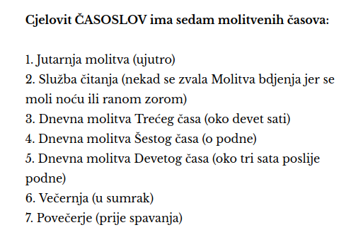

SLUŽBA ČITANJA
(moli se noću ili ranom zorom)
ČASOSLOV JUTARNJA
(ujutro)
O, JOSIPE OČE SVETI...
MOLITVE ZAŠTITE
TIJEKOM CIJELOG DANA
SVETAC DANA
LITURGIJA DANA
BIBLIJSKA PORUKA DANA
(tumačenje fra Tomislava Pervana)
SJEME LORENZO MONTECALVO
ČASOSLOV SREDNJI ČAS
(9.00 h - 15.00 h)
ČASOSLOV VEČERNJA
(u sumrak)
ČASOSLOV POVEČERJE
(prije spavanja)